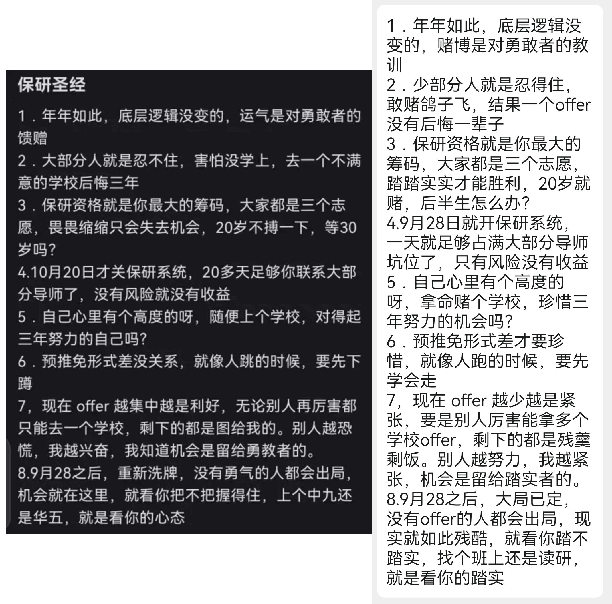

前言
如果你已经考虑清楚要推免保研，那么希望以下内容对你有所帮助。
以下内容多采用流水账的方式记录，如果各位看官不想浪费时间，请直接看夏令营经历、预推免经历两个栏目，其余栏目看个乐子就好。祝各位都能拿到自己喜欢的offer。
个人背景
本科学校：某末流985分校
专业：数学与统计学院-数据科学与大数据技术
（我也觉得计算机类的专业在数学学院很奇怪，可能是交叉专业的原因？？）
GPA：4.0906/5.0
绩点排名：4/68
综合推免排名：5/68
英语：511（CET-4）、481（CET-6）
竞赛：（一些水赛水奖）数学建模国赛省二、美赛H奖、亚太建模一等奖、蓝桥杯省三、RAICOM省三、市场调研与分析大赛省二、计算机设计大赛省二
论文无，项目无，科研经历无。
我的简历真的很差劲，没有什么亮眼的地方，只是一个普通人。
常见术语
| 名称 | 解释 |
|---|---|
| rk、rank | 排名，可以是绩点排名，也可以是综合排名，哪个高用哪个 |
| title | 学校头衔，名气，如四非、双非、211、985、C9、华五、top |
| com | committee 缩写，强com指招生组委会权力大，必须通过学院考核，录取效力比较铁；弱com指意向导师权利大，必须联系导师考核，录取效力看导师人品 |
| oq | over-qualified 缩写，材料审核的老师认为你过于厉害，最终不会来，故意淘汰你 |
| wl | waiting list 缩写，候补队列，指有更优秀更合适的同学在你前面，你先进入鱼塘 |
| bar | 门槛，入围院校的难度，预推免比夏令营可能还高 |
| AP | assistant professor 缩写，指助理教授，一般是非升即走制度下的职位，具有招收博士的资格，一般为年轻老师 |
| push | 课题组科研压力很大 |
| 夏令营 | 各大高校提前抢优秀生源的活动，竞争激烈 |
| 预推免 | 高校继续招生的活动，门槛一般比夏令营低 |
| 928 | 指9月28号，这天上午9点国家推免系统开放，也标志着九推开始，一般而言，所有高校在9月29号一天完成全部录取工作 |
| 十推 | 指十月中上旬某些高校紧急招收推免生，国家推免系统10月20号关闭 |
| 鸽 | 学校、导师、学生，任意两方或三方不守信用，放鸽子 |
| 鸽穿 | 院校的候补名单中所有学生都能被录取，可能有些院校被全部学生放鸽子 |
| 套辞、陶瓷、套瓷 | touch直译，指学生联系导师，一般用于获得青睐、推荐、offer |
| 反向套瓷 | 导师倒追学生，一般可能是坑导，或者导师被学生鸽了而急缺人 |
| 官回 | 导师或院校官方回复，指敷衍学生 |
| 反向官回 | 学生足够牛，吊着导师 |
| 羊导、养导 | 导师散养，一般不管学生干啥，允许实习 |
| 海王 | 对学生而言，指手握大量offer，对导师而言，鱼塘有大量学生 |
保研圣经
今年保研圣经依然在发挥着作用，不少院校还是出现了被鸽穿的现象。但是赌输了就真的没学上了。
